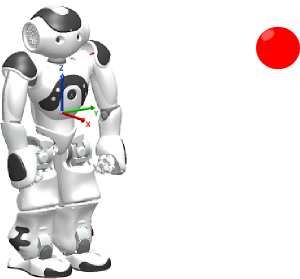

ALTracker¶
Overview | API | Tutorial or samples
What it does¶
ALTracker module allows the robot to track different targets (red ball, face, landmark, etc) using different means (head only, whole body, move, etc).
The main goal of this module is to establish a bridge between target detection and motion in order to make the robot keep in view the target in the middle of the camera.
How it works¶
Tracking modes¶
ALTracker can track target with the following modes:
 NAO &
NAO &  Pepper¶
Pepper¶
| Mode | The robot will track ... | Comment |
|---|---|---|
| Head | with the Head only (this is the default mode) | The two head’s joint are controlled to track the target. |
| WholeBody | with whole body and fixed legs | The robot keeps balance autonomously and adapts his posture to track the target. |
| Move | with move | The robot moves in order to keep a defined distance to the target. |
Pepper only¶
| Mode | The robot will track ... | Comment |
|---|---|---|
| Navigate | with move and obstacle avoidance | The robot moves in order to keep a defined distance to the target. This mode uses
|
Target names¶
ALTracker can follow these targets:
| Target | Parameters | Comment |
|---|---|---|
| RedBall | diameter of ball (meter) | Used to compute the distance between robot and ball. |
| Face | width of face (meter) | Used to compute the distance between robot and face. |
| LandMark | [size, [LandMarkId, ...]] | size is used to compute the distance between robot and LandMark. LandMarkId to specify the LandMark to track. |
| LandMarks | [[size, [LandMarkId, ...]], [size, [LandMarkId, ...]]] | Same parameters as LandMark. One array by LandMark. |
| People | [peopleId, ...] | Used to track a specific people. |
| Sound | [distance, confidence] | distance is used to estimate sound position and confidence to filter sound location. |
Position identification¶
- The Tracker module identifies the position of the target seen by the robot.
- It can give the position of the target in desired frame (see Frames).
- Function
ALTrackerProxy::getTargetPositionreturns the [x, y, z] position of active target.
Performance and Limitations¶
Limitations
This is done assuming an average target size, so it might not be very accurate.
Prerequisites¶
A robot ready to move¶
According to the chosen Mode, the Stiffness of the used body parts must be set to 1.0, or they couldn’t move.
Moreover, for Move and WholeBody modes, the robot must be in a standing posture, ready to move.
| Mode | Prerequisite |
|---|---|
| Head |
|
| WholeBody |
|
| Move |
To set the Stiffness, use motion api
ALMotionProxy::stiffnessInterpolation.
To easily go to a predefined postures, see:
ALRobotPostureProxy::goToPosture.
Modules to launch¶
According to the chosen Target, ALTracker needs a specific module to run.
So be sure it is loaded on your robot:
| To follow the Target ... | Launch the module ... |
|---|---|
| RedBall | ALRedBallDetection |
| Face | ALFaceDetection |
| LandMark | ALLandMarkDetection |
| LandMarks | ALLandMarkDetection |
| People | ALPeoplePerception |
| Sound | ALSoundLocalization |
Getting started¶
Choregraphe¶
- Choose one of the boxes available in Trackers folder of the standard box Library.
- Set the parameters.
- Make sure your robot is ready to move. For further details, see: A robot ready to move.
- Run the behavior.
Use Cases¶
Here are some possible applications (from the simplest to the more ambitious ones) that can be built from Robot’s ability to track a target.
Case 1: Move toward a red ball: Red Ball Tracker Sample
Case 2: Tracking a person with head: Face Tracker Sample
Case 3: Tracking the red ball with head and LArm: LArm Tracker Sample
Case 4: Tracking a Blob with generic event: Generic event Tracker Sample